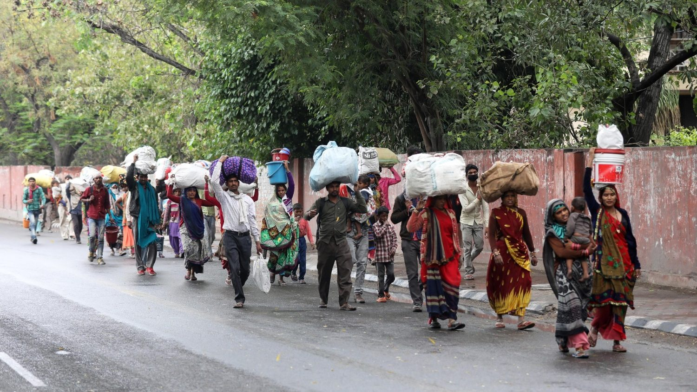
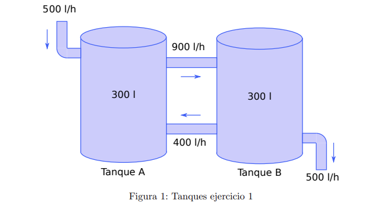

Trabajo Fin de Grado
11 de Septiembre, 2026
Este trabajo estudia la desigualdad inflacionaria entre hogares españoles según su estructura de gasto, utilizando la Encuesta de Presupuestos Familiares y el Índice de Precios al Consumidor a nivel de Clasificación del Consumo Individual por Finalidad detallado, desde 2006 hasta 2025. 📈
RStudio
Topic Modeling
Este trabajo analiza la relación entre el discurso político de los principales partidos españoles y las prioridades expresadas por la ciudadanía a través de técnicas de Topic Modeling.
RStudio
Limpieza de Datos
En este trabajo se desarrolla un flujo completo para limpiar y preparar la encuesta ATUS, con el objetivo de analizar de manera integrada las dimensiones de actividad, sexo, edad y estado.
RStudio
Análisis Espacial
Este trabajo analiza a nivel estatal el impacto de la cultura de armas en Estados Unidos, utilizando como proxis la tasa de posesión de armas y la afiliación política del partido gobernante en cada estado.

RStudio
Análisis Espacial
Este artículo analiza la distribución espacial de la pobreza multidimensional y la migración laboral en los estados de la India aplicando técnicas de análisis espacial para identificar grupos significativos de valores altos y bajos. 🥻

RStudio
Ecuaciones Diferenciales
Se realizó un estudio numérico y gráfico de sistemas de ecuaciones diferenciales lineales y no lineales, incluyendo transferencia entre tanques, campos de fases y soluciones oscilatorias. 🚰
RStudio
Ecuaciones Diferenciales
Se simuló numéricamente la propagación de una mancha de contaminación marina y una epidemia utilizando sistemas de ecuaciones diferenciales parciales y ordinarias. 😷